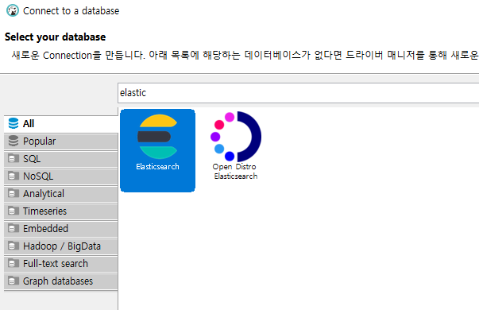
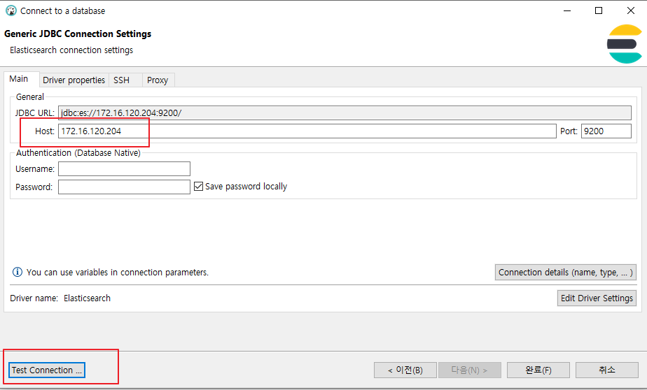
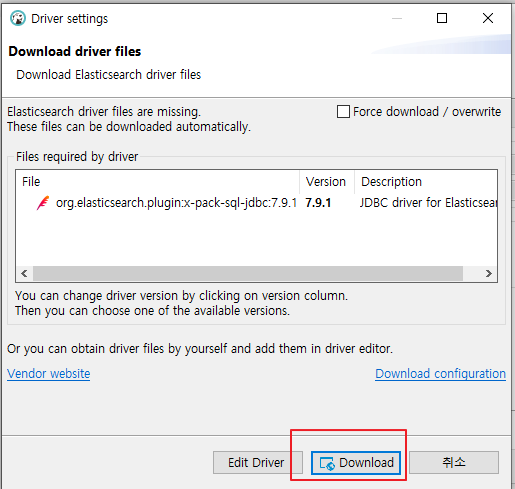
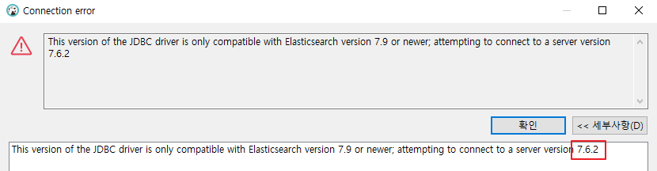
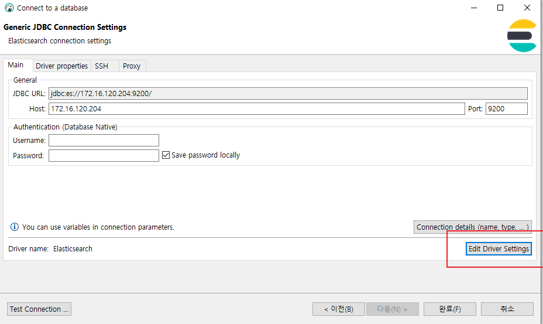
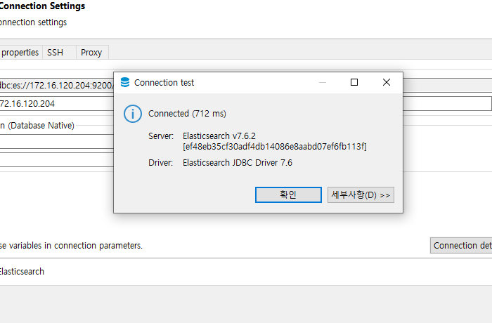
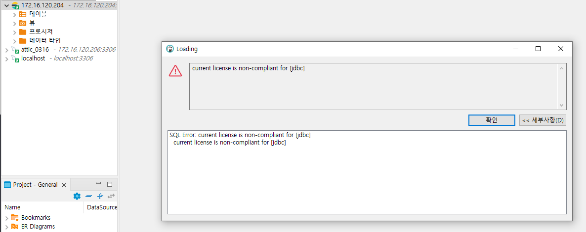

how to connect elasticsearch in dbeaver
2022, Jun 18
dbeaver elasticsearch es
1. 메뉴 [데이터베이스] → [새 데이터베이스 연결]

2. host, port, auth정보 입력하고 [Test Connection] 클릭

3. 드라이브가 없는 경우, Download버튼을 통해 다운받습니다.

4. 설치한 es버전은 7.6.2인데, jdbc드라이버는 7.8.1이여서 발생한 에러

This version of the JDBC driver is only compatible with Elasticsearch version 7.9
or newer; attempting to connect to a server version 7.6.2
5. elasticsearch 버전에 맞는 jdbc드라이버를 다운받습니다
Past Releases of Elastic Stack Software
6. 그럼 다시 test connection을 통해서 driver를 다운받은걸 교체합니다.

[Edit Driver Settings]를 눌러서 교체

7.9.1은 Delete하고
Add File을 통해서 다운받은 jar파일로 지정합니다
그리고 다시 Test Connection 클릭하면 성공

Dbeaver에 connection 추가한것 확인하고 + 버튼으로 테이블 확인합니다.

current license is non-compliant for [jdbc]
7. 에러..에러…….발생
결론
basic버전은 jdbc지원 안한다는..플래티넘부터 지원한다고 함. 슬픈 결론